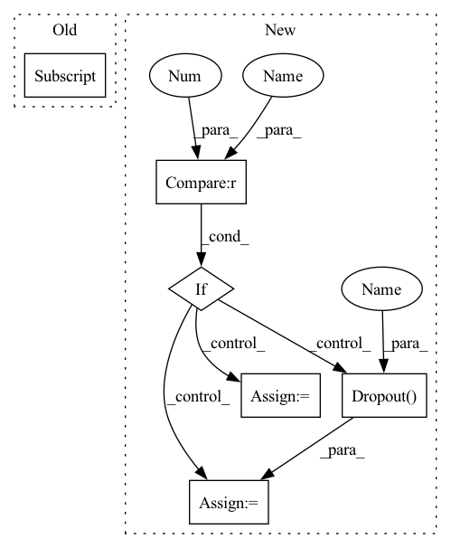

Pattern ID :5425
Before Change
if layer_norm:
self.layers.append(nn.LayerNorm(hidden_features[i] * num_heads))
self.layers.append(
GATConv(hidden_features[i] * num_heads, hidden_features[i + 1] , num_heads, activation=activation))
self.layers.append(GATConv(hidden_features[-1] * num_heads, num_heads, out_features))
@propertyAfter Change
attn_drop=0.0,
residual=False,
activation=None))
if dropout > 0.0 :
self.dropout = nn.Dropout(dropout )
else:
self.dropout = None
@property
def model_type(self):In pattern: SUPERPATTERN
Frequency: 3
Non-data size: 6
Instances Fragment ID: 19229701
Project Name: thudm/grb
Commit Name: ba47f80cc1faefcff7dc0d6e383ff6e6ebab9b5d
Time: 2021-08-16
Author: 2363471925@qq.com
File Name: grb/model/dgl/gat.py
M Class Name: GAT
N Class Name: GAT
M Method Name: __init__(13)
N Method Name: __init__(7)
M Parent Class: nn.Module
N Parent Class: nn.Module
M File Name: grb/model/dgl/gat.py
N File Name: grb/model/dgl/gat.py
M Start Line: 8
M End Line: 26
N Start Line: 42
N End Line: 95
Before Change
for i in range(len(hidden_features) - 1):
if layer_norm:
self.layers.append(nn.LayerNorm(hidden_features[i]))
self.layers.append(SGConv(hidden_features[i], hidden_features[i + 1] ))
@property
def model_type(self):After Change
out_features=hidden_features[i + 1],
k=k))
if dropout > 0.0 :
self.dropout = nn.Dropout( dropout)
else:
self.dropout = None
@property
def model_type(self): Fragment ID: 19229700
Project Name: thudm/grb
Commit Name: ba47f80cc1faefcff7dc0d6e383ff6e6ebab9b5d
Time: 2021-08-16
Author: 2363471925@qq.com
File Name: grb/model/torch/sgcn.py
M Class Name: SGCN
N Class Name: SGCN
M Method Name: __init__(10)
N Method Name: __init__(6)
M Parent Class: nn.Module
N Parent Class: nn.Module
M File Name: grb/model/torch/sgcn.py
N File Name: grb/model/torch/sgcn.py
M Start Line: 32
M End Line: 42
N Start Line: 44
N End Line: 74
Before Change
self.layers = nn.ModuleList()
if layer_norm:
self.layers.append(nn.LayerNorm(in_features))
self.layers.append(GATConv(in_features, hidden_features[0] , num_heads, activation=activation))
for i in range(len(hidden_features) - 1):
if layer_norm:
self.layers.append(nn.LayerNorm(hidden_features[i] * num_heads))After Change
attn_drop=0.0,
residual=False,
activation=None))
if dropout > 0.0 :
self.dropout = nn.Dropout( dropout)
else:
self.dropout = None
@property
def model_type(self): Fragment ID: 19229703
Project Name: thudm/grb
Commit Name: ba47f80cc1faefcff7dc0d6e383ff6e6ebab9b5d
Time: 2021-08-16
Author: 2363471925@qq.com
File Name: grb/model/dgl/gat.py
M Class Name: GAT
N Class Name: GAT
M Method Name: __init__(13)
N Method Name: __init__(7)
M Parent Class: nn.Module
N Parent Class: nn.Module
M File Name: grb/model/dgl/gat.py
N File Name: grb/model/dgl/gat.py
M Start Line: 8
M End Line: 26
N Start Line: 42
N End Line: 95
Before Change
if layer_norm:
self.layers.append(nn.LayerNorm(hidden_features[i]))
self.layers.append(
GINConv(hidden_features[i] , hidden_features[i + 1], activation=activation))
self.linear1 = nn.Linear(hidden_features[-2], hidden_features[-1])
self.linear2 = nn.Linear(hidden_features[-1], out_features)
After Change
dropout=dropout))
self.linear1 = nn.Linear(hidden_features[-2], hidden_features[-1])
self.linear2 = nn.Linear(hidden_features[-1], out_features)
if dropout > 0.0 :
self.dropout = nn.Dropout( dropout)
else:
self.dropout = None
self.reset_parameters()
@property Fragment ID: 19229699
Project Name: thudm/grb
Commit Name: ba47f80cc1faefcff7dc0d6e383ff6e6ebab9b5d
Time: 2021-08-16
Author: 2363471925@qq.com
File Name: grb/model/torch/gin.py
M Class Name: GIN
N Class Name: GIN
M Method Name: __init__(11)
N Method Name: __init__(7)
M Parent Class: nn.Module
N Parent Class: nn.Module
M File Name: grb/model/torch/gin.py
N File Name: grb/model/torch/gin.py
M Start Line: 36
M End Line: 47
N Start Line: 45
N End Line: 83